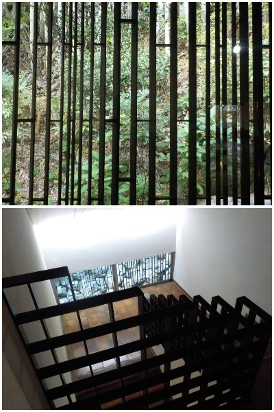
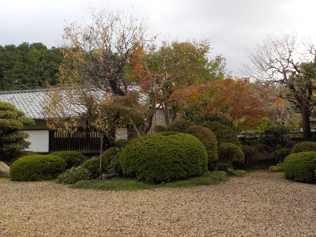

田部美術館はあちこち渋い感じがするな。
更新日 : 2026/11/03

ホームページに館内のお洒落な雰囲気の写真がありますが、実物も落ち着きがあって素晴らしかったです。田部家なので鉄のフレーム感を出した作りになってるのかな？

天気が悪かったんですが、そのぶん落ち着いた感じの紅葉がみれました。
かふぇかなちゃん家のプリンを食べながらのんびり過ごしました。
島根県松江市北堀町310-5
更新日 : 2026/11/03

ホームページに館内のお洒落な雰囲気の写真がありますが、実物も落ち着きがあって素晴らしかったです。田部家なので鉄のフレーム感を出した作りになってるのかな？

天気が悪かったんですが、そのぶん落ち着いた感じの紅葉がみれました。
かふぇかなちゃん家のプリンを食べながらのんびり過ごしました。